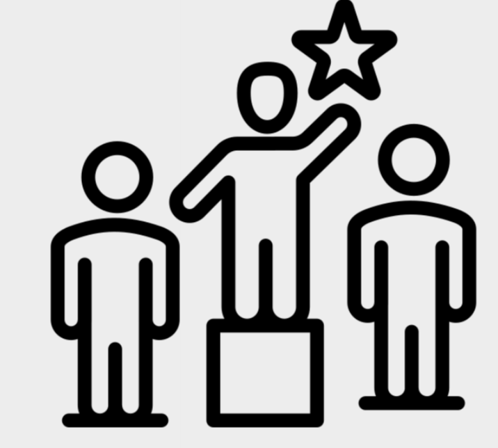
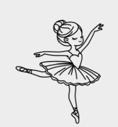
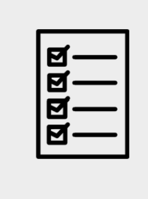

Competition and Jealousy

Competitiveness is something that we all feel from time to time. It can be really useful when you need to work hard to achieve your goals, or want to have some fun at a contest. But being overly competitive can damage our relationships with ourselves and others. We might start tying our self-worth to beating other people. We might still feel competitive even when the race or exam is over.
Competitiveness can turn into jealousy, envy and perfectionism real quickly if left unchecked. We can start to be rude to those we feel threatened by without even realising it. Too much comparison in this way is very unhealthy.
Scenario
Becky is confused as to why her friends are distancing themselves from her. Read her story and the reflective questions to help her understand:
Things feel so awkward between my friends. I come to sit with them in form time but they don’t really talk to me anymore. I don’t get why because they have been soooo annoying to me.
One. Mikayla won’t shut up about her dance competition. She came first place in the country or something, and now she always has this big smile on her face. She shared a photo with us and brought her trophy to school yesterday. Can she not read the room? No-one cares! It’s just dance, she should calm down and stop showing off. That’s why I didn’t ask her about it.  The only good thing this week was that I got higher than Fiona in the Biology test. She didn’t tell me when I asked her twice, but when our papers were handed out I took a glance at her mark and it was 3 marks lower than me. Phewww! She’s literally soooo dumb lol
Then at her party, Polly came in with this blue sparkly dress and curled hair. She was wearing mascara too, what a try hard! I tried my best to stay away from that attention seeker. Her crush asked me if I was her friend and if I could introduce him to her. She doesn’t need an ego boost, so I rolled my eyes and said she doesn’t want to talk to him.
Emily started blabbering about how she found her late grandma’s heirloom in her attic. She kept saying how special it was to her. Emily has never bought antiques ever so I got annoyed. I said ‘You do realise every old person has antiques right? Your grandma isn’t even here anymore. If you actually knew what you were talking about you would have found it sooner.’

Reflective Questions
Why does Becky say things like 'No-one cares' and 'it's just a dance'?
Reveal
She is jealous and trying to minimise Mikayla's achievement to make herself feel better. Hearing about it triggers her because she feels like other people's success makes her's less.
Why would Mikayla want to distance herself from Becky?
Reveal
Mikayla noticed that Becky didn't ask her about the competition. True friends celebrate eachother's achievements..
What's wrong with Becky checking Fiona's test scores?
Reveal
Fiona already didn't want to share her test score. Becky shouldn't have to see someone else's score , not least her friend's, to feel good about herself. Becky is being judgemental calling Fiona dumb when her score is only 3 marks lower.
What is strange about the phrase 'You do realise', that Becky said to Emily?
Reveal
It's condescending and patronising (trying to make Emily appear dumber and less than) and make Becky sound like she thinks she is smarter. Speaking to people with this tone often hurts people's feelings. In this case with the subject being Emily's grandma Becky was being extremely insensitive.
Why was Becky avoiding Polly?
Reveal
She was jealous of her appearance and seeing and being near her reminded Becky of her own insecurities.
Why did Becky lie to Polly's crush?
Reveal
Becky was so jealous of the attention Polly was getting that she wanted to sabotage Polly's potential happiness by ruining her relationships with other people.
Becky has shown signs of extreme competitiveness that have gone too far. Have a think about how competitive you are and whether that is something you need to change.
Key Takeways
No one wants to end up like Becky. It's an exhausting and selfish way of living. It is important to be honest with ourselves. If we notice our own thought patterns are comparing ourselves to others we can then take steps to stop the thoughts getting out of control. It's great to have things we can learn from our friends or feel inspired by. Healthy competition is when we desire to be the best version of ourselves and know that other people doing well in their lives doesn't make ours worse.